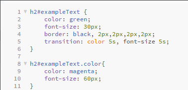
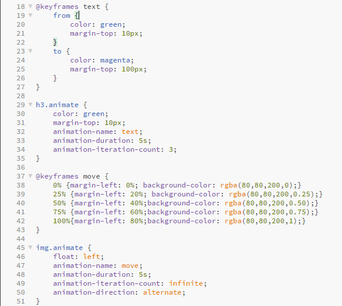

Lesson 8 -Creating CSS3 Transitions and Animations in CSS and triggering them with JavaScript
CSS transitions create a way to control the speed that CSS properties change. This allows us to change things over time instead of having changes take place instantly.
- transition-property --> name(s) of properties to which the transition will apply
- transition-duration --> length of time ti takes the transition to complete. This can be one duration for the whole transition or can be broken down into different speeds for different properties
- transition-timing-function --> Determines how transition progresses from start to finish
- transition-delay --> determines how long until the transition starts
We can trigger these transitions using a JavaScript button just like we did in the last lesson by adding classes. Here is what the CSS looks like for transitions.
WOW! This is fun!
Animations
Animations use "keyframes" to specify what styles each element will have at which time. We can also add loops to have the animation run over again. On the first animation we have it set to run 3 times, on the second we want it to alternate forward and backward infinitly. The only way to stop the animation would be to click the button again, to remove the class we added. This is what the CSS code looks like for the animation. It is written in two different styles, both using @keyframe.
